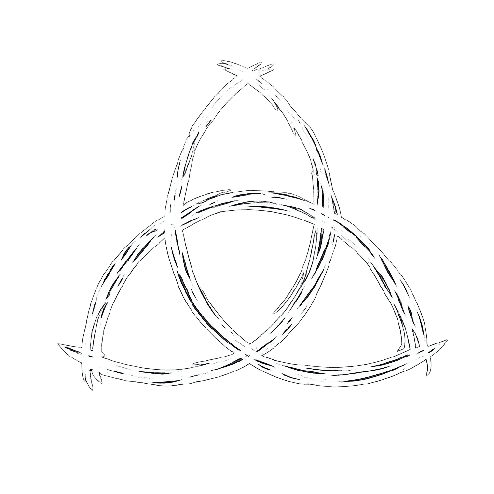
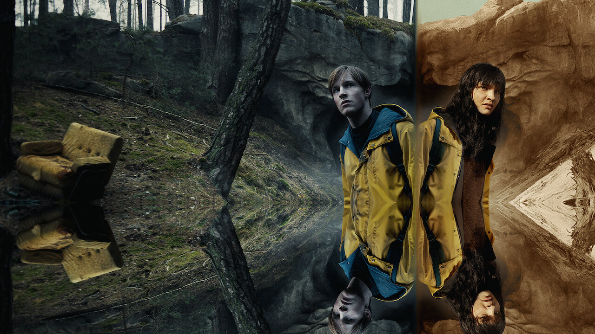

Todo está conectado.
Dark es mucho más que una serie sobre viajes en el tiempo. Es una historia donde el destino, los secretos familiares y las decisiones de cada generación forman parte de un mismo ciclo. Descubre el universo creado por Baran bo Odar y Jantje Friese.
La desaparición de un niño en el pequeño pueblo de Winden revela una red de secretos que conecta a cuatro familias a través de distintas épocas. A medida que la historia avanza, pasado, presente y futuro dejan de ser conceptos separados para convertirse en un único ciclo.

Mira el tráiler oficial y prepárate para entrar en un mundo donde el tiempo deja de ser lineal.